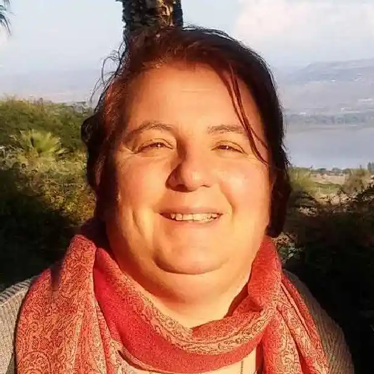
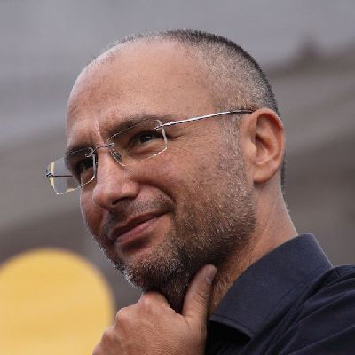

Bienvenue...
Ici vous trouverez quelques messages, salutations et quelques suggestions pour commencer le chemin.
Pèlerins depuis un demi-siècle
Un chemin de 50 ans accompagné par la main de trois papes : Paul VI, Jean-Paul II, François
L'équipe du pèlerinage Pompei 2025
Rome 1975 puis Assise et encore la capitale, jusqu'à ce pèlerinage au Sanctuaire de Pompei. Nous avons commencé avec la bénédiction de pape Paul VI, nous avons été accompagnés par les prières de pape Jean-Paul II, nous avons recueilli l'invitation de pape François à être "levain dans l'Église et dans la société". Et nous continuons, en continuant à chercher à faire "ce que l'Esprit nous dira". Comme communautés de Foi et Lumière, nous sommes en chemin en Italie depuis 50 ans, un chiffre qui impressionne, qui stimule des réflexions sur le passé, le présent et l'avenir...
"De grandes choses il a faites pour nous" : il a renversé des schémas et des logiques désormais dépassées, il a renversé la perspective, il nous a aidés à comprendre que le plus fragile peut être protagoniste...
Un merci spécial à vous tous, qui avez accueilli l'invitation à revenir pèlerins ; aux communautés de Campanie qui nous accueillent ; aux scouts et à tous ceux qui nous ont donné un coup de main pour surmonter les obstacles...
Un voyage spirituel
Une réflexion de Père Benoit sur la signification profonde du pèlerinage à la Madone de Pompei
 Père Benoit Malvaux
Assistant ecclésiastique national
Père Benoit Malvaux
Assistant ecclésiastique national
La grande famille de Foi et Lumière Italie est réunie en pèlerinage au Sanctuaire de la Bienheureuse Marie Vierge du Saint Rosaire, mieux connue sous le nom de "Madone de Pompei", après plus de 50 ans d'existence. Il ne s'agit pas d'une simple sortie, mais d'une initiative proprement spirituelle, dont il vaut la peine d'approfondir le sens.
D'abord, nous sommes partis en pèlerinage. Ce mot vient du latin "peregrinatio", qui exprime le désir de voyager loin. Mais ce voyage ne se fait pas pour le simple plaisir de découvrir des terres inconnues. C'est un voyage religieux, accompli habituellement vers un lieu sacré, pour remercier le Seigneur, pour faire pénitence, ou pour approfondir la foi ou le sens de la vie. Le chemin extérieur que le pèlerin accomplit est ainsi au service d'un autre chemin, plus fondamental, qui se déroule à l'intérieur de soi-même.
Pendant ces jours de pèlerinage, notre voyage intérieur sera d'abord un remerciement au Seigneur pour le beau cadeau de cinquante ans d'existence de Foi et Lumière en Italie. Nous pourrons ainsi faire nôtres les paroles de louange au Seigneur prononcées par Marie dans le Magnificat. En entendant les paroles d'Élisabeth, Marie a remercié Dieu pour la présence de Jésus en elle. Nous aussi, nous pouvons rendre grâce pour la présence de Dieu dans la vie de nos communautés et dans la vie de chacun de nous, qui nous a permis de vivre tant de belles et grandes choses.
Dans ce sens, il est beau que la destination de notre pèlerinage soit précisément un sanctuaire dédié à la Madone, et plus spécifiquement à la Madone du Rosaire, qui prie son Fils pour nous et avec nous. Nous pourrons aussi remercier la Madone pour son intercession et lui demander de continuer à demander à Jésus de bénir nos familles et nos communautés.
Dire merci ensemble
Le remerciement générationnel de Pietro Vetro pour les dons reçus et la mission à continuer
 Pietro Vetro
Président Foi et Lumière APS
Pietro Vetro
Président Foi et Lumière APS
Et nous, ton peuple et troupeau de ton pâturage, te rendrons grâce à jamais ; de génération en génération nous raconterons ta louange
Cher amis, en ces jours nous nous retrouvons à Pompei pour rendre grâce au Seigneur pour les grands dons qu'il nous a faits : nos amis fragiles, leurs parents, leurs frères et sœurs, tous les compagnons de chemin qu'il nous a fait rencontrer à Foi et Lumière, en Italie, mais aussi à Chypre, en Grèce, en Albanie, en Croatie, en Slovénie... Nous le remercions parce que nous sommes tous des pas individuels d'un long chemin, celui de Foi et Lumière, commencé par nos fondateurs et que nous, dans notre petit, avec ce peu que nous avons, contribuons à maintenir vivant.
Je me souviens encore de ma première réunion avec la communauté de Foi et Lumière à laquelle j'appartiens, Sainte Croix : on a immédiatement parlé d'un pèlerinage qui aurait lieu peu de temps après : celui de Lourdes. Sept mois plus tard, nous étions en voyage. J'ai des souvenirs très vifs de ces jours : 20 heures de voyage dans un train brûlant tout pour nous, puis l'impact avec la petite ville et tous ses gadgets sacrés, l'Esplanade, la Prairie et l'Église de Sainte Bernadette, 15 000 pèlerins du monde entier, chacun avec son poncho coloré, la première Lavage des Pieds à l'hôtel avec les personnes de ma communauté, la première fois que j'ai entendu la chanson "Son io a far comunità" (en français), la visite de la grotte, l'immersion dans les piscines avec Corrado, les offices célébrés avec des chrétiens d'autres confessions avec Federico, le long voyage de retour passé à bavarder jusqu'à tard en sirotant du cappuccino soluble et du Tavernello. À la fin, j'étais tellement heureux que j'ai ressenti le besoin d'écrire une lettre à tous mes amis en racontant ce que ma femme et moi avions vécu et en concluant avec "Entrer à Foi et Lumière en 2000 pour moi et Ilaria a été vraiment un grand coup de chance" (en réalité j'ai utilisé un autre terme, mais disons que c'est mieux d'écrire ainsi).
J'étais entré à Foi et Lumière déjà adulte, marié, contrairement à beaucoup qui fréquentaient (et qui fréquentent encore) la communauté de Sainte Croix. Je me suis toujours senti partie d'une autre génération, même si pas chronologiquement : celle des personnes entrées à Foi et Lumière "après". En tant que partie d'une génération suivante, j'ai perçu la chance de pouvoir observer le Mouvement avec des yeux "nouveaux", la conscience de m'être perdu tant de choses, la tâche de porter en avant, d'abord en tant que membre de la communauté de Sainte Croix, le chemin qui avait été commencé avant mon arrivée... "de génération en génération".
J'ai participé à d'autres pèlerinages à Foi et Lumière : à Assise, à Lorette (quand nous nous étions déjà séparés en trois Provinces), à nouveau à Assise et maintenant à Pompei. J'ai partagé mon chemin avec tant de personnes qui maintenant nous regardent du Ciel, envers lesquelles je ressens une profonde gratitude pour ce qu'elles ont dit, écrit, fait, témoigné : Mariangela Bertolini, Stefano Di Franco, Anna Giulia Balzarini, Corrado Fontani et tant d'autres. C'est aussi pour continuer ce qu'elles ont commencé que, quand on me demande d'accepter une responsabilité, je réponds avec un "oui" : parce que j'appartiens à une génération suivante à la leur et la meilleure façon de les remercier est de contribuer dans mon petit pour que ce qui a été leur rêve, ce chemin de tant de petits pas, continue.
Un pèlerinage est d'abord un moment de remerciement, écrivais-je au début. Pour cela, il est important de ne jamais oublier notre histoire, ceux qui nous ont précédés et qui maintenant ne sont plus avec nous mais nous indiquent quand même la direction à prendre. Mais un pèlerinage est aussi un moment pour s'arrêter et réfléchir à l'avenir : 50 ans ne sont pas peu ; nous ne sommes plus des gamins et nous vivons dans un monde profondément différent de quand Foi et Lumière est née. Il est temps qu'une autre génération, elle aussi pourvue d'"yeux nouveaux" et en même temps avec la pleine conscience de notre histoire, prenne le gouvernail de notre bateau.
Je conclus avec un souhait personnel : celui de remercier ceux qui m'ont précédé dans le rôle de Président de l'Association Foi et Lumière en Italie pour tout ce qu'ils ont fait : Enza Gucciardo, Paolo Tantaro et Angela Gattulli... compagnons de voyage encore aujourd'hui toujours présents.
Un puzzle de souvenirs et de visages
Les coordinateurs des trois provinces réfléchissent sur le passé et l'avenir de Foi et Lumière
 Liliana Ghiringhelli Coordinatrice d'Un Fleuve de Paix
 Fabio Bronzini
Coordinateur de Kimata
Fabio Bronzini
Coordinateur de Kimata
 Vito Giannulo Coordinateur de Mers et Volcans
Comme c'est beau d'être ici à des dizaines, des centaines d'amis ! En arrivant à Pompei – et pas seulement dans le bref temps du voyage, mais dans tous ces longs et fatigants mois de préparation – nous avons escaladé une montagne de souvenirs des autres pèlerinages auxquels nous avons participé. Je me souviens de mon père assis sur l'herbe devant la grotte de Bernadette dans l'une des dernières saisons sereines de sa vie, tu te souviens de Chicco indomable dans son poncho bleu, toi au contraire tu te souviens des Grecs et des Chypriotes il y a presque quinze ans, et jamais tu n'aurais imaginé qu'ils deviendraient si amis, et toi, toi... Tous unis, nous mettons ensemble un puzzle de milliers de pièces avec les visages de ceux qui étaient à Lourdes, à Assise, à Lorette, sur la place Saint-Pierre.
C'est notre passé : cinquante ans qui peuvent être fardeau ou essence, poids ou stimulus. Cela dépend de nous. Ceux qui étaient là depuis plus longtemps se souviendront que nous avons toujours dit que Foi et Lumière servait à aider les familles à sortir de la clôture des maisons leur souffrance et à donner aux personnes handicapées la possibilité d'exprimer pleinement leur personnalité. Cela vaut-il encore ? Dans certains contextes, oui. Mais, en général, beaucoup moins qu'avant. La société a grandi – peut-être aussi grâce à Foi et Lumière ! – les familles ont plus d'accompagnements, les jeunes ont plus d'occasions de sociabilité. Alors à quoi sert aujourd'hui Foi et Lumière ? Les communautés, nous tous, connaissons des morceaux de réponse à cette question et en ces jours nous les mettrons ensemble. Ce sera le puzzle du futur, un plein de joie et de sérénité à transmettre à ceux qui sont à nos côtés, quand nous rentrerons à la maison.
Restons ouverts au souffle de l'Esprit
Le vœu du coordinateur international de FL : une célébration internationale qui regarde le passé pour construire l'avenir
 Raul Izquierdo Garcia
Coordinateur international
Raul Izquierdo Garcia
Coordinateur international
Chères sœurs et chers frères des communautés de Foi et Lumière d'Italie qui vivez ce pèlerinage, chers pèlerins qui vous joignez d'Albanie, Chypre, Grèce et aussi de Slovénie et Croatie, nous célébrons un événement important pour les communautés de Foi et Lumière d'Italie, rien moins que leurs 50 ans d'histoire. FÉLICITATIONS ! C'est une célébration qui regarde le passé pour se situer dans le présent et se projeter vers l'avenir. Ces 50 ans sont un don de Dieu, un don unique et précieux pour lequel un seul mot jaillit de nos cœurs en réponse à tant de bien reçu : merci !!!
Des premiers pas faits à Rome par Mariangela Bertolini et du premier pèlerinage de 1975 avec le Pape Paul VI jusqu'à aujourd'hui, combien de souvenirs et d'expériences ! Regarder en arrière suscite tant d'émotions. Beaucoup de personnes sont déjà passées entre les bras du Père, des personnes qui nous ont tant enseigné, que nous avons embrassées, avec qui nous avons partagé joies et larmes. Personnes avec handicap intellectuel, pères et mères, amis... Tous ont laissé un signe indestructible dans notre histoire et nous manquent. Nous savons que la mort fait partie de la vie et nous faisons confiance, comme nous le rappelle Saint Paul, que rien ne peut nous séparer de l'Amour de Dieu, pas même la mort.
Tant avant nous ont fait partie de Foi et Lumière et ont été appelés par le Seigneur à faire partie d'une communauté. Comment ne pas avoir un souvenir ému et reconnaissant de tous eux ! Chacun d'eux a été un trésor pour Foi et Lumière en Italie. Peuvent ainsi surgir des sentiments de nostalgie et une certaine tristesse, mais ne manquent pas joie et espérance. Nous avons tant de raisons de remercier Dieu pour ce que nous avons vécu ! Tant de rencontres dans nos petites communautés, auxquelles nous avons participé fidèlement même sous la pluie, le froid, la chaleur ou le vent impétueux. Combien de fois nous avons prié ensemble, louant ou rendant grâce au Dieu de la Vie et combien de fois nous nous sommes réunis autour du pain et du vin de l'Eucharistie, créant fraternité et liens nés de Dieu lui-même. Quels embrassades, baisers, regards et sourires de nos amis avec handicap intellectuel qui nous ont rappelé qu'en quelque sorte ils sont plus proches du cœur de Dieu et que nous aussi nous avons des handicaps, comme la dureté du cœur ou tant de peurs qui trop souvent nous bloquent. Quels projets partagés et rêves attendus depuis longtemps, dont certains réalisés. Quelles difficultés et défis, ceux qui n'ont pas pu être menés à terme et ceux qui se sont réalisés, même si au début ils semblaient presque impossibles.
Oui, l'Esprit Saint nous a donné de vrais amis et une vraie famille. Certainement chacun de vous pourrait énumérer les dons reçus à Foi et Lumière, comme l'acceptation de nous-mêmes avec nos faiblesses et fragilités ou une meilleure compréhension du message central de l'Évangile. Chacun de vous aurait dans sa liste beaucoup de noms spécifiques, de personnes réelles, de rencontres personnelles inattendues ou d'expériences uniques. Combien de chansons chantées ensemble, combien de rires, combien de temps vécu en fidélité, mais aussi nos déceptions, les pierres qui pesaient trop, les peurs qui parfois nous ont paralysés...
Nous devons penser au moment que nous vivons. Célébrer c'est reconnaître que quelque chose de bon est arrivé : nous voulons en rendre grâce ensemble. Le présent c'est se concentrer sur ce que je fais maintenant. Quel moment meilleur que celui-ci pour rappeler le dicton latin "Carpe Diem", comme invitation à profiter du présent face à la fugacité du temps. Et le présent est aussi plein de personnes vraies, telles qu'elles sont et non telles que je voudrais qu'elles soient, avec leurs histoires personnelles, leurs dons et leurs fragilités. Vouloir vivre notre vocation comme communautés de Foi et Lumière dans le présent signifie être ouverts au souffle de l'Esprit et l'écouter à chaque moment.
À Foi et Lumière nous aimons profiter des choses simples de la vie, comme boire quelque chose ensemble, faire une promenade ou prier. Un message WhatsApp encourageant, une étreinte sincère ou une chanson joyeuse sont toutes des occasions que nous devons continuer à cultiver avec créativité et détermination. Cette célébration de votre cinquantième anniversaire ne peut pas se limiter à repenser nostalgiquement au passé, en cédant à la tentation de penser que tout était mieux avant. Le meilleur doit toujours venir. Et c'est l'avenir, qui semble ne jamais arriver, mais que nous ne pouvons pas nous empêcher d'anticiper et de désirer. Ne mettons pas de barrières à nos rêves ! Déposons-les dans notre prière aux pieds du Seigneur, afin que ses rêves soient toujours les nôtres.
Nous avons toujours des idées, des projets, des propositions... parfois ce qui nous manque c'est le temps pour les réaliser ou les personnes qui nous donnent un coup de main. À Foi et Lumière, en Italie et dans le reste des Pays qui participent à ce pèlerinage, vous le savez bien : tant d'années d'histoire ne se sont pas réalisées seules, mais ont requis tant de personnes, un grand engagement et un dur travail. L'avenir de nos communautés pourrait être possible avec des personnes qui continuent à écouter l'appel de Dieu à faire partie de cette famille, dont le cœur est tourné vers les personnes avec handicap intellectuel, capables de dire OUI, comme Marie de Nazareth. Parce que nous avons été appelés à faire partie de la famille de Foi et Lumière non pour nos mérites ou nos capacités, mais par pure grâce de Dieu. Et, comme Marie, nous n'avons pas tout clair et nous sommes tourmentés par la peur et le manque de confiance. Mais à la fin, nous sommes appelés à avoir confiance et à dire OUI au rêve de Dieu pour nous, qui nous connaît si bien et nous aime tant. Que vous puissiez faire pour vous en ces 50 ans d'histoire partagée. Uni en Jésus.